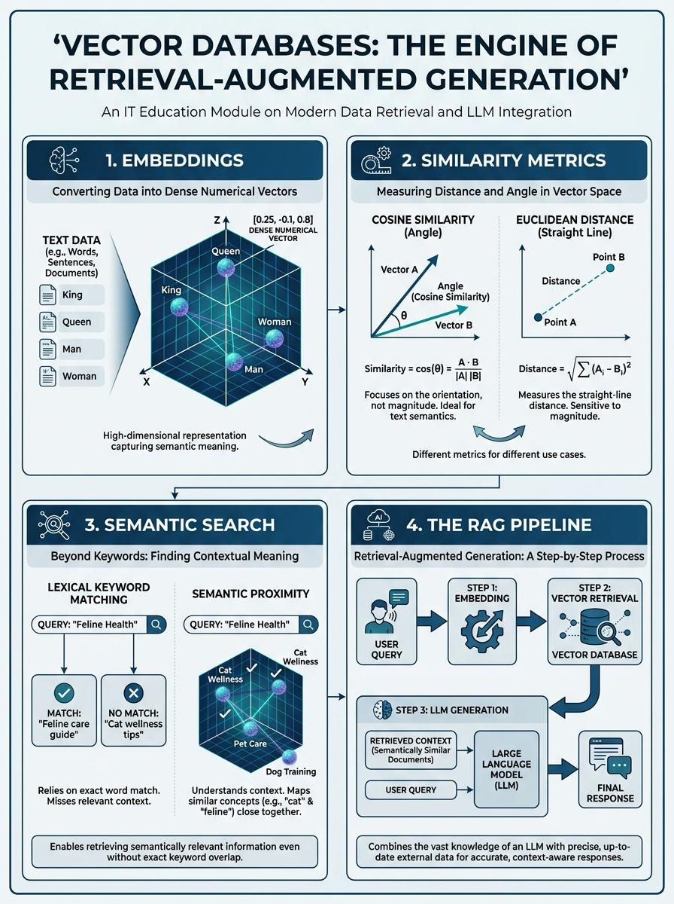

1 Overview
This lesson explores the symbiotic relationship between Vector Databases and Retrieval-Augmented Generation (RAG). While Large Language Models (LLMs) possess vast general knowledge, they are limited by fixed training data and finite context windows.
Vector databases serve as an external, long-term memory for these models. By converting unstructured data into numerical vectors, these databases allow RAG systems to retrieve relevant information based on meaning rather than exact keywords, effectively "grounding" the LLM in private or real-time datasets.
Detailed Concepts
Embeddings: Vector Representation
At the core of a vector database is the "Embedding." An embedding is a numerical representation of data (text, images, or audio) in a high-dimensional space.
- Dimensionality Models represent a single sentence as hundreds or thousands of floating-point numbers.
- Dense Vectors Embeddings capture abstract features of meaning across every dimension.
The fundamental principle is that semantically similar items are mathematically mapped closer together in this high-dimensional coordinate system.
Similarity Search: Metrics & Indexing
Vector databases do not use conventional SQL "WHERE" clauses. Instead, they perform a nearest-neighbor search.
Cosine Similarity: Best for text; focuses on angle/orientation rather than magnitude.
Euclidean Distance (L2): Straight-line distance; used when absolute magnitude matters.
Dot Product: Combines angle and magnitude; ideal for ranking systems.
HNSW: A graph-based index for extremely fast "small world" traversal.
IVF: Clusters vectors to narrow the search space to relevant clusters.
Semantic vs. Keyword
Fails on "cat wellness" vs "feline healthcare" because word tokens do not match exactly.
"The database understands context, synonyms, and even cross-lingual queries."
The Role in RAG
1. Encoding & Retrieval
The query is vectorized and the database finds the Top-K relevant chunks in milliseconds.
2. Augmentation & Generation
Retrieved context is prepended to the prompt, grounding the LLM in factual evidence.
Conclusion
Vector databases are the engine that makes RAG performant, accurate, and scalable. By shifting from literal keyword matching to high-dimensional semantic search, they allow LLMs to access vast, dynamic libraries of information. Through the use of embeddings and optimized similarity metrics, vector databases ensure that the most contextually relevant data is retrieved, transforming a generic AI into a specialized tool.